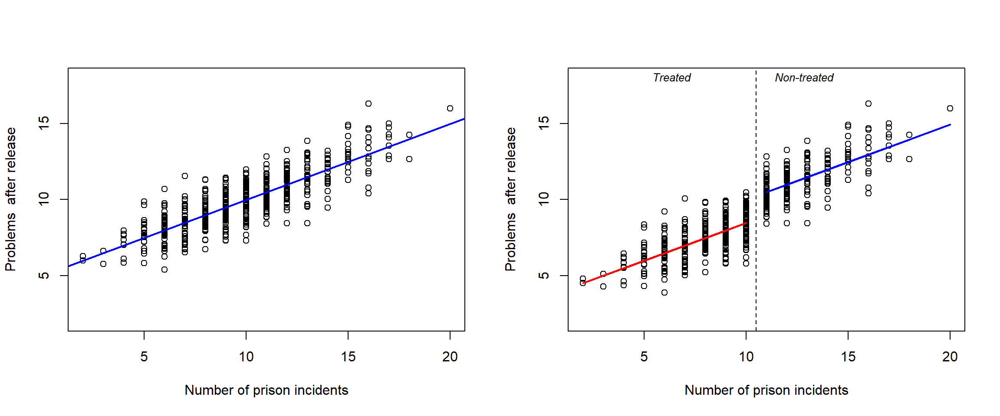
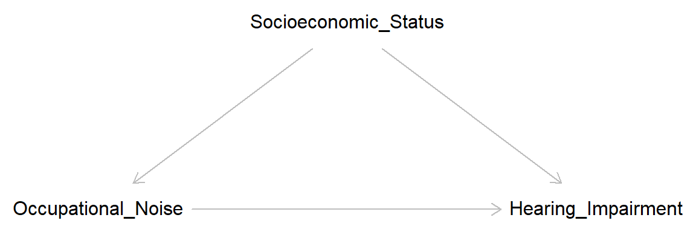
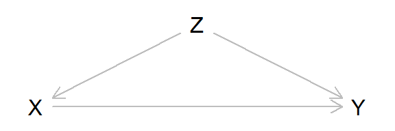
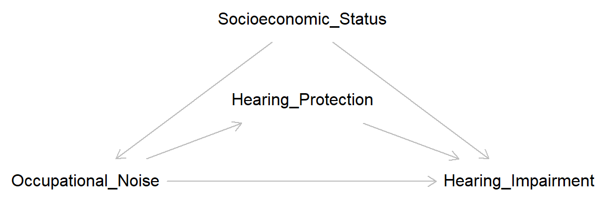
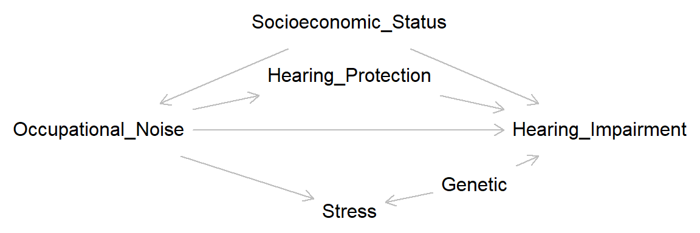
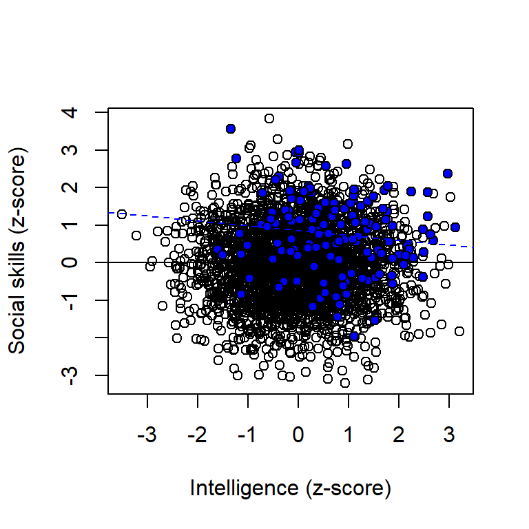
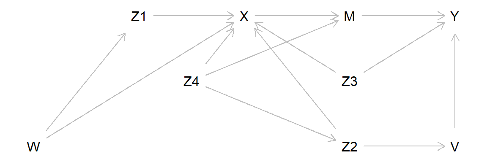

Code
library(dagitty) # R implementation of http://www.dagitty.netWarning: package 'dagitty' was built under R version 4.4.3Load R-libraries
library(dagitty) # R implementation of http://www.dagitty.netWarning: package 'dagitty' was built under R version 4.4.3Theoretical articles to read:
Observational studies, sometimes called correlational studies, involve measurement of study units on exposure and outcome variables and, typically, a set of variables that potenitally may confound the exposure-outcome relationship.
Note that observational versus experimental is not a crisp distinction, there is a grey zone (as always).
The key challenge for observational studies is that it is hard to separate effects of exposure (“treatment effects”) from systematic errors (bias) induced by uncontrolled variables as selection mechanisms are partly or fully unknown.
Rohrer (2018) Conclusion: Making Causal Inferences on the Basis of Correlational Data is Very Hard
Causal inference solely from observations require additional assumptions about sources of bias. Key assumptions may concisely be summarized in a Directed acyclical graph (DAG). Note: That the same data may be consistent with several DAGs that may be mutually inconsistent. Causal estimates only unbiased if your assumptions are correct (and it is very hard to know if they are).
Cholera outbreak in London 1854, transmitted by air or water?
Snow (1855):
“… Each company supplies both rich and poor, both large houses and small; there is no difference in the condition or occupation of the persons receiving the water of the different companies… As there is no difference whatever either in the houses or the people receiving the supply of the two Water Companies, or in any of the physical conditions with which they are surrounded, it is obvious that no experiment could have been devised which would more thoroughly test the effect of water supply on the progress of Cholera than this, which circumstances placed ready made before the observer…”
Regression discontinuity design, in theory a design with ignorable assignment mechanisms (under the strong assumption that its relationship to the outcome is modelled correctly, below assuming a linear relationship.)

Measuring both independent variables (exposure, covariates) and dependent variable (outcome) at the same time in a population (or sample) at one point in time.
With the purpose to achieve other things equal (ceteris paribus).
Goal: Unit homogeneity = exchangeable units
Restriction may increase internal validity, at the expense of external validity
Add covariates in a regression model.
Weakness: Model dependent, i.e., based on assumptions of, for example, linear relationships between variables (as assumed in multiple linear regression). If critical relationships are non-linear, for example, between confounders and the exposure, then confounding may still bias the causal effect estimate although the confounding variables have been included in the linear regression model (so called “residual confounding”)
Confounding, also known as “omitted variable bias” is maybe the most obvious alternative explanation to causal explanations. A third variable, not controlled for, may have influenced both exposure and outcome, leading to biased estimates of the causal effect.
A simple example: Hearing impairment is more common among construction workers than office workers. A potential causal factor is occupational noise exposure; after all, construction sites tend to be noisier than offices. But socioeconomic status is a potential confounder. Individuals from low socioeconomic background may be more likely to become construction workers than individuals from high socioeconomic background, and we know that socioeconomic status is related to most health outcomes, probably also risk for hearing impairment. Here is a simple DAG:
confound <- dagitty( "dag {
Occupational_Noise -> Hearing_Impairment
Occupational_Noise <- Socioeconomic_Status-> Hearing_Impairment
}")
coordinates(confound) <- list(
x = c(Occupational_Noise = 1, Socioeconomic_Status = 2, Hearing_Impairment = 3),
y = c(Occupational_Noise = 2, Socioeconomic_Status = 1, Hearing_Impairment = 2))
plot(confound)
Note that according to this DAG, occupational noise do indeed cause hearing impairment, but the size of the causal effect may be biased unless variation in socioeconomic status is taken into account.
Negative confounding
A confounder may hide or mask a casual relationship between two variables. Consider this DAG:
confound2 <- dagitty( "dag {
X -> Y
X <- Z -> Y
}")
coordinates(confound2) <- list(
x = c(X = 1, Z = 2, Y = 3),
y = c(X = 2, Z = 1, Y = 2))
plot(confound2)
Here a simple simulation, assuming that the average causal effect of X on Y is 0.5, that is, increasing X with one unit would on average increase Y with 0.5 units.
set.seed(123)
n <- 1e5
# Define causal effects
b_zx <- -1 # Causal effect of z on x
b_zy <- 1 # Causal effect of z on y
b_xy <- 0.5 # Causal effect of x on y
# Define variables (structural equations)
z <- rnorm(n)
x <- rnorm(n) + b_zx*z
y <- rnorm(n) + b_zy*z + b_xy*x
# Try this if you prefer random effects:
# x <- rnorm(n) + rnorm(n, mean = b_zx, sd = 0.2) * z
# y <- rnorm(n) + rnorm(n, mean = b_zy, sd = 0.2) * z +
# rnorm(n, mean = b_xy, sd = 0.2) *x
# Estimate total average causal effect of x on y
lm_crude <- lm(y ~ x) # Crude model
lm_adjusted <- lm(y ~ x + z) # Model adjusted for z
# Print results
lm_crude
Call:
lm(formula = y ~ x)
Coefficients:
(Intercept) x
0.002486 0.003130 lm_adjusted
Call:
lm(formula = y ~ x + z)
Coefficients:
(Intercept) x z
-0.0005948 0.5000543 0.9979861 … and it may also reverse the causal effect estimate (type S error):
set.seed(123)
n <- 1e5
# Define causal effects
b_zx <- -1 # Causal effect of z on x
b_zy <- 1.5 # Causal effect of z on y
b_xy <- 0.5 # Causal effect of x on y
# Define variables (structural equations)
z <- rnorm(n)
x <- rnorm(n) + b_zx*z
y <- rnorm(n) + b_zy*z + b_xy*x
# Estimate total average causal effect of x on y
lm_crude <- lm(y ~ x) # Crude model
lm_adjusted <- lm(y ~ x + z) # Model adjusted for z
# Print results
lm_crude
Call:
lm(formula = y ~ x)
Coefficients:
(Intercept) x
0.00403 -0.24583 lm_adjusted
Call:
lm(formula = y ~ x + z)
Coefficients:
(Intercept) x z
-0.0005948 0.5000543 1.4979861 Residual confounding
Residual confounding is bias that remains despite our attempt to adjust for a confounder. This could happen for several reasons, for example:
A key insight from learning about Directed Acyclic Graphs (DAGs) is that controlling for covariates can sometimes introduce bias. This can occur in two main ways: by controlling for a mediating variable, leading to overadjustment bias, or by controlling for a collider variable, resulting in collider bias. It’s also important to note that controlling for a descendant of such variables can similarly introduce bias, though typically to a lesser degree.
“Overadjustment bias” or “overcontrol bias” refer to bias that is introduced by controlling for a mediating variable. In the example discussed above, controlling for hearing protection at work may lead to bias. Possibly overestimating the total average causal effect by eliminating a mediator that might reduce the adverse effect.
overadj <- dagitty( "dag {
Occupational_Noise -> Hearing_Impairment <- Hearing_Protection
Occupational_Noise -> Hearing_Protection
Occupational_Noise <- Socioeconomic_Status-> Hearing_Impairment
}")
coordinates(overadj) <- list(
x = c(Occupational_Noise = 1, Socioeconomic_Status = 2, Hearing_Protection = 2,
Hearing_Impairment = 3),
y = c(Occupational_Noise = 2, Socioeconomic_Status = 1, Hearing_Protection = 1.5,
Hearing_Impairment = 2))
plot(overadj)
Conditioning on a variable that is a collider may introduce bias. In this DAG, Stress (physiological reactivity to stressors) is a collider on the path
\(Occupational \ Noise \rightarrow Stress \leftarrow Genetic \rightarrow Hearing \ Impariment\),
where Genetic may be some unmeasured biological vulnerability linked to both physiological stress reactions and hearing impairment. Adjusting for Stress may introduce collider bias by opening up a backdoor path between exposure and outcome.
collide <- dagitty( "dag {
Occupational_Noise -> Hearing_Impairment <- Hearing_Protection
Occupational_Noise -> Hearing_Protection
Occupational_Noise <- Socioeconomic_Status-> Hearing_Impairment
Occupational_Noise -> Stress <- Genetic -> Hearing_Impairment
}")
coordinates(collide) <- list(
x = c(Occupational_Noise = 1, Socioeconomic_Status = 2, Hearing_Protection = 2,
Hearing_Impairment = 3, Stress = 2, Genetic = 2.5),
y = c(Occupational_Noise = 2, Socioeconomic_Status = 1, Hearing_Protection = 1.5,
Hearing_Impairment = 2, Stress = 2.75, Genetic = 2.5))
plot(collide)
Here a simple example of collider bias:
\(Intelligence \rightarrow Income \leftarrow Social \ skills\)
Assume that intelligence is independent of social skills in the general population, and that both have a positive influence on income. Assume we found a negative association between IQ scores and scores on a social skill test in a sample of chief executive officers (CEOs) of large companies. A causal interpretation of this could be that: “Maybe people with high IQ spend a lot of time reading books, and therefore do not develop their social skills.” An alternative explanation would be that the observed association was spurious, an example of collider bias. Here a simulation:
set.seed(431)
n <- 3e3
iq <- rnorm(n) # IQ scores, standardized to mean = 0, sd = 1
ss <- rnorm(n) # Social skill scale, standardized to mean = 0, sd = 1
income <- rnorm(n) + rnorm(n, 0.4, 0.2) * iq +rnorm(n, 0.4, 0.2) * ss
# Plot full popualtion
plot(iq, ss, xlab = "Intelligence (z-score)", ylab = "Social skills (z-score)")
abline(lm(ss ~iq))
# Add line for sample restricted to high income people
points(iq[income > 2], ss[income > 2], pch = 21, bg = "blue")
abline(lm(ss[income > 2] ~iq[income > 2]), lty = 2, col = "blue")
Open symbols and black regression line refer to the full population; blue points and blue regression line refer to a sample restricted to high income people.
Assume that we observed that X and Y were associated in our sample. “X cause Y” (H1) is certainly not the only possibility, here is my list of potential explanations (I am sure you can find more examples):
Assume that we observed that X and Y were not associated in our sample. “X does not cause Y” (H0) is certainly not the only possibility, here is my list of potential explanations (I am sure you can find more examples):
The simple DAG answer: Experiments disconnect the exposure variable (X) from other variables in the causal diagram, that is, the manipulation changes X from being an endogenous variable to an exogenous variable. Assuming of course that assignment mechanism, non-compliance and missing data are “ignorable”.
Short-cut DAG:
The full DAG may be hard to conceptualize, for example if the research field is not well-developed with little theory to guide the construction of the full DAG. A short-cut is then to conceptualize all casual paths leading in to X and then try to close these by conditioning on relevant variables, mimicking an experiment where X is manipulated.
Closing all paths going in to X is, in theory, analogous to manipulating X.
shortcut <- dagitty( "dag {
W -> Z1 -> X
Y <- V <- Z2 -> X <- W
X -> M -> Y
Y <- Z3 -> X
Z2 <- Z4 -> X
Z4 -> M
}")
coordinates(shortcut) <- list(
x = c(W = 1, Z1 = 2, X = 3, V = 5, Z2 = 4, M = 4, Y = 5, Z3 = 4, Z4 = 2.5),
y = c(W = 2, Z1 = 1, X = 1, V = 2, Z2 = 2, M = 1, Y = 1, Z3 = 1.5, Z4 = 1.5))
plot(shortcut)
These are two helpful suggestions:
Adjust for all pre-treatment variables. Doing so theoretically blocks all causal paths to the exposure variable, effectively eliminating confounding.
Avoid adjusting for any post-treatment variables. As doing so can introduce overadjustment bias or collider bias.
The practice problems are labeled Easy (E), Medium (M), and Hard (H), (as in McElreath (2020)).
13E1.
Suppose that in the population of college applicants, being good at baseball is independent of having a good math score on a certain standardized test (with respect to some measure of ‘good’). A certain college has a simple admission procedure: admit an applicant if and only if the applicant is good at baseball or has a good math score or both. Give an intuitive explanation of why it makes sense that among students that this college admits, having a good math score is negatively associated with being good at baseball, i.e., conditioning on having a good math score decreases the chance of being good at baseball.
Old exam question (stolen from Blitzstein & Hwang, 2019, an excellent introduction to probability)
13E2. Adjustment of a mediator may lead to overadjustment bias or collider bias or both when estimating the total average causal effect of exposure on outcome. Explain.
13E3. Many observational studies on violent video gaming and aggression only include boys. Why may this be a good idea?
13M1. Draw a simple DAG illustrating confounding, and discuss how the sign of the relationships may lead to negative confounding.
13M2. Residual confounding is bias that remains despite our attempt to control for a confounder. Explain why residual confounding may be more of a problem if the covariate is controlled for by statistical control (adding it to a regression model) then by matching on the covariate.
13M3. When estimating causal effects in experiments or observational studies, including variables in a regression model is a way of adjusting for covariates. Two simple rules when estimating total causal effects:
Rule 1. Adjust for all measured pre-treatment covariates.
Rule 2. Don’t adjust for any post-treatment covariates.
13H1. Assume that X is a dichotomous variable that causes Y, and that Z causes both X and Y. Furthermore, assume that \(Z \rightarrow Y\) is non-linear (e.g., quadratic). Simulate data and estimate the total average causal effect of X on Y in two ways:
Discuss the two methods ability to recover the true casual effect for your simulated scenario.
13H2. Matching is an adjustment strategy that can be applied both at the design stage of a study and after data collection. When implemented after data collection, it is sometimes referred to as “data pruning.” Explain the rationale behind this terminology and discuss how matching differs when applied at the design stage versus after data collection.
13H3. Two rules were mentioned above (13M3):
Rule 1: Adjust for all measured pre-treatment covariates. Rule 2: Avoid adjusting for any post-treatment covariates.
These are excellent general guidelines. However, like most rules, they come with exceptions!
Draw a Directed Acyclic Graph (DAG) that represents a scenario where it would be beneficial to violate Rule 1.
Draw a Directed Acyclic Graph (DAG) that represents a scenario where it would be beneficial to violate Rule 2.
13H4. Researchers wanted to compare kids from a low and a high socioeconomic area on their response to a new pedagogic method for teaching math. They first administered a short math test to all kids in each area and noted the the average score among the kids from the high socioeconomic area was much higher than the average score among the kids from the low socioeconomic area. To achieve balanced groups, they took a random sample of 50 kids from the low socioeconomic area and then matched each kid with a kid from the high socioeconomic area with a similar score on the math test. Both groups were then subjected to the new pedagogic method, after which they were tested again on a similar test. The 50 low socioeconomic kids had about the same average result as before, whereas the 50 high socioeconomic kids had a higher average score after than before. The conclusion was that the method seems to work, but only for kids with a high socioeconomic background.
Give an alternative explanation.
sessionInfo()R version 4.4.2 (2024-10-31 ucrt)
Platform: x86_64-w64-mingw32/x64
Running under: Windows 11 x64 (build 26100)
Matrix products: default
locale:
[1] LC_COLLATE=Swedish_Sweden.utf8 LC_CTYPE=Swedish_Sweden.utf8
[3] LC_MONETARY=Swedish_Sweden.utf8 LC_NUMERIC=C
[5] LC_TIME=Swedish_Sweden.utf8
time zone: Europe/Stockholm
tzcode source: internal
attached base packages:
[1] stats graphics grDevices utils datasets methods base
other attached packages:
[1] dagitty_0.3-4
loaded via a namespace (and not attached):
[1] digest_0.6.37 fastmap_1.2.0 xfun_0.52 knitr_1.50
[5] htmltools_0.5.8.1 rmarkdown_2.29 cli_3.6.5 compiler_4.4.2
[9] boot_1.3-31 rstudioapi_0.17.1 tools_4.4.2 curl_6.4.0
[13] evaluate_1.0.3 Rcpp_1.0.14 yaml_2.3.10 rlang_1.1.6
[17] jsonlite_2.0.0 V8_6.0.4 htmlwidgets_1.6.4 MASS_7.3-61